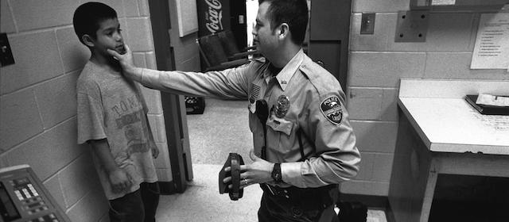

2020-06-24 08:00

The following is reposted with the author’s permission from an editorial in the Daily Hampshire Gazette. The community Lois refers to here is unimportant; it could be any in America.
Lois Ahrens: Defund the police and break the chain
I want to talk about one long chain. Starting in this tiny city and in every city where mayors and councilors decide on policing budgets. Here the amount for police is almost $7 million a year. A big chunk considering there is almost no crime. But like everywhere, it starts with mayors and city councils giving too much money and too much power to too many cops.
The money goes to cops in schools where Black children and Latinx children get disciplined, suspended and expelled at much higher rates than white children. It moves on to racial profiling with stops of drivers and people walking down the street.
And, sometimes policing and especially over-policing leads to arrests and then charges and then over-charging by district attorneys, including Northwestern District Attorney David Sullivan. That means piling up so many charges that people have little choice but to take a plea bargain out of fear of a longer sentence if they risk going to trial.
From there, the chain goes to prisons and jails. In Massachusetts, we pay $1.2 billion to keep about 14,000 people caged in jails and prisons, overstaffed by guards with unions as powerful as the ones police have. Like police outside, they are trained in the same us versus them “warrior “mentality.
When you add this up — too many police, racial profiling, cops in schools, district attorneys and plea bargains — what we get is a state where more than half of the prison population is Black and Latinz, even although those groups account for 17% of Massachusetts’ population.
And, right now prisoners, that is people, in state prisons have been locked down for months. This is really a “lockdown,” not just being unable to eat in a restaurant or take a trip to California. This is being locked in a cell the size of a parking space. This is locked down where social distancing is impossible. This is locked down, where in the Framingham women’s prison, 85 of 180 women have COVID.
It starts here. In this city council and in every city council, which is why we need to defund the police and start breaking the chain.
Lois Ahrens
Northampton
The writer is founding director of The Real Cost of Prisons Project.